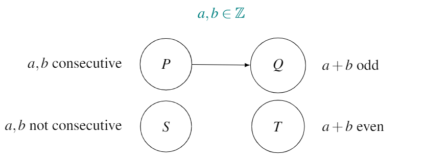
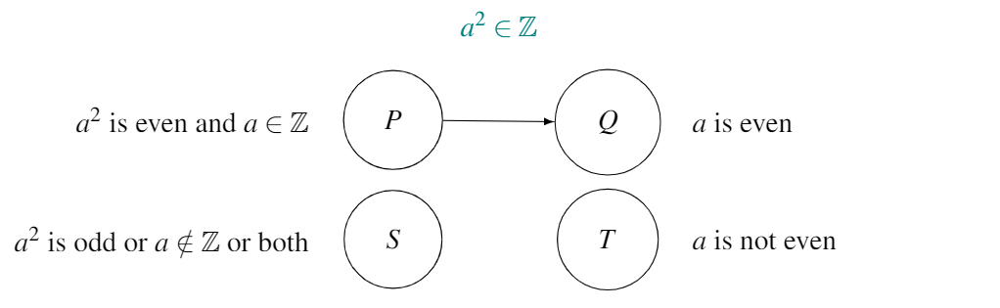
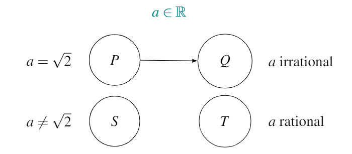
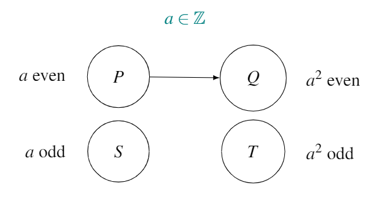

Chapter 17 ▶ Proof by contradiction
This method is based on the same principle as proof by contrapositive. Proof by contrapositive relies on the fact that if \(P\) always \(\Rightarrow Q\), then \(T\) implies \(S\). In a proof by contradiction, we assume that \(P\) and \(T\) are both true (e.g. \(a\) is an even integer and \(a^2\) is odd) then go looking for a contradiction. Because assuming \(P\) is fine (it’s the starting point for the conjecture), the contradiction must have arisen due to our other assumption, that of \(T\) being true.
Proof by contradiction is like building a fantasy world: one where both \(P\) and \(T\) can be true at the same time. We then explore this world (usually using algebra) until we find a contradiction, which shatters our illusions and the fantasy world collapses: \(P\) and \(T\) can’t both be true at the same time. If \(P\) and \(T\) can’t both be true simulataneously, and remembering our observation in the last chapter that every element on the left hand side of a conjecture map must travel to the right hand side, \(P\) must go to \(Q\).
Proof by contradiction is a great method - building this fantasy world and pretending all is OK until you find an irrefutable contradiction. It’s kind of like this…
17.1 Steps
- Assume \(P\) and \(T\).
- Go exploring within this fantasy world.
- When you come up against a contradiction (something that is blatantly impossible), you’re forced to conclude that your only assumption (that \(T\) can be true whilst \(P\) is true) has to be rejected. \(P \nRightarrow T\) and so, as the elements in \(P\) must go somewhere, \(P \Rightarrow Q\).
17.2 Formal definition
If \(P \nRightarrow T\), then \(P \Rightarrow Q\).
17.3 Conjectures
Exercise 17.1 Use the following examples to practise proof by contradiction.
Conjecture 17.1 : The sum of two consecutive integers is odd.
Conjecture 17.2 : If \(a^2\) is even and \(a \in \mathbb Z\), then \(a\) is even.
Conjecture 17.3 : \(\sqrt{2}\) is irrational.
Conjecture 17.4 : If \(a\) is even, then \(a^2\) is even. (Note, this is different to Conjecture 17.2, as they have different starting points.)
Solutions:
Conjecture 17.1: First, we rewrite the conjecture,
To prove this using a direct proof would require us to consider two cases: firstly where the lower of the two integers is even, and then where the lower of the two integers is odd.
Let’s try a proof by contradiction. To attempt a proof by contradiction, we draw the map for the conjecture, to correctly identify \(P\) and \(T\):

Proof. We assume that two integers, \(a,b\), are consecutive (\(P\)) and that their sum is even (\(T\)). W.l.o.g. let \(a\) be the lower of the two integers.
Therefore, \[\begin{align} b &= a+1 \tag{17.1} \end{align}\] and \[\begin{align} a + b &= 2k \tag{17.2} \end{align}\] where \(k \in \mathbb Z\).
Now, let’s explore this world and check if we find any contradictions. Combining Equations (17.1) and (17.2), we get \[\begin{align} a + a+1 &= 2k \\ 2a+1 &= 2k \\ 1 &= 2k - 2a \\ 1 &= 2(k - a) \tag{17.3} \end{align}\] but this is clearly crazy: Equation (17.3) says that \(1\) is an even number!
We have found our contradiction.
Conclusion: Assuming \(T\) is true when \(P\) is true has led to a contradiction, and thus \(T\) can’t be true when \(P\) is true. If \(T\) can’t be true when \(P\) is true, but the elements of \(P\) must travel to right-hand side of the map, then they must all travel to \(Q\). We have proved \(P \Rightarrow Q\) for every element in \(P\).
Conjecture 17.2: We again draw the map for the conjecture, so as to correctly identify \(P\) and \(T\):

Proof. We assume that \(a^2\) is even and that \(a\) is an integer (\(P\)). We also assume that \(a\) is not even (\(T\)). As we’ve assumed that \(a\) is an integer, \(T\) implies \(a\) is an odd integer.
We have, \[\begin{align} a^2 &= 2k \tag{17.4} \end{align}\] and \[\begin{align} a &= 2l + 1 \tag{17.5} \end{align}\] where \(k,l \in \mathbb Z\).
Now, let’s explore this world and check if we find any contradictions. Combining Equations (17.4) and (17.5), we get \[\begin{align} (2l+1)^2 &= 2k \\ 4l^2 + 4l + 1 &= 2k \\ 1 &= 2k - 4l^2 - 4l \\ 1 &= 2(k - 2l^2 - 2l) \tag{17.6} \end{align}\] but this is clearly crazy: Equation (17.6) says that \(1\) is an even number! We have a blatant contradiction (the same one we found in the proof of Conjecture 17.1).
We have found our contradiction.
Conclusion: Assuming \(T\) is true when \(P\) is true has led to a contradiction, and thus \(T\) can’t be true when \(P\) is true. If \(T\) can’t be true when \(P\) is true, but the elements of \(P\) must travel to right-hand side of the map, then they must all travel to \(Q\). We have proved \(P \Rightarrow Q\) for every element in \(P\).
Conjecture 17.3: First, we rewrite the conjecture,
The trouble with trying to prove this using a direct proof is the same reason Conjecture 16.4 was difficult to prove using a direct proof: we don’t have an algebraic way to express the family of irrational numbers. As we have an algebraic way to express the family of rational numbers,50 a proof by contradiction is probably going to be a lot easier than a direct proof of \(P \Rightarrow Q\).
We again draw the map for the conjecture, so as to correctly identify \(P\) and \(T\):

Proof. We assume that \(a = \sqrt{2}\) (this is \(P\)), and that \(a\) is rational (this is \(T\)). As \(a\) is rational, it can be written as the fraction of two integers. Let’s say that we have simplied this fraction as much as possible, arriving at a fraction of two integers, \(\frac{k}{l}\), that can’t be simplied any further.51
Therefore, \[\begin{align} a &= \sqrt{2} \tag{17.7} \end{align}\] and \[\begin{align} a &= \frac{k}{l} \tag{17.8} \end{align}\] where \(k, l \in \mathbb Z\) and \(k,l\) share no common divisors.
Now, let’s explore this world and check if we find any contradictions. Combining Equations (17.7) and (17.8), we get \[\begin{align} \sqrt{2} &= \frac{k}{l} \\ 2 &= \frac{k^2}{l^2} \\ 2l^2 &= k^2 \tag{17.9} \end{align}\] Equation (17.9) tells us that \(k^2\) is even. As \(k^2\) is even and \(k \in \mathbb Z\), then \(k\) must be even too. (We proved this in Conjecture 17.2.) Therefore, \[\begin{align} k &= 2m \tag{17.10} \end{align}\] where \(m \in \mathbb Z\).
Substituting Equation (17.10) into Equation (17.9) gives \[\begin{align} 2l^2 &= (2m)^2 \\ 2l^2 &= 4m^2 \\ l^2 &= 2m^2 \tag{17.11} \end{align}\] Equation (17.11) tells us that \(l^2\) is even, which again means that \(l\) is even, as \(l\) is an integer.
We now know that both \(k\) and \(l\) are even, and thus share \(2\) as a common divisor. But this is contradictory to us having simplified the fraction \(\frac{k}{l}\) as far as possible.
We have found our contradiction.
Conclusion: Assuming \(T\) is true when \(P\) is true has led to a contradiction, and thus \(T\) can’t be true when \(P\) is true. If \(T\) can’t be true when \(P\) is true, but the elements of \(P\) must travel to right-hand side of the map, then they must all travel to \(Q\). We have proved \(P \Rightarrow Q\) for every element in \(P\).
Conjecture 17.4: It is very easy to prove this conjecture using a direct proof. However, we’ll use a proof by contradiction to practice the method.
We again draw the map for the conjecture, so as to correctly identify \(P\) and \(T\):

Proof. We assume that an integer \(a\) is even (\(P\)) and that its square \(a^2\) is odd (\(T\)).
Therefore, \[\begin{align} a &= 2k \tag{17.12} \end{align}\] and \[\begin{align} a^2 &= 2l + 1 \tag{17.13} \end{align}\] where \(k,l \in \mathbb Z\).
Now, let’s explore this world and check if we find any contradictions. Combining Equations (17.12) and (17.13), we get \[\begin{align} (2k)^2 &= 2l + 1 \\ 4k^2-2l &= 1 \\ 2(2k^2-l) &= 1 \tag{17.14} \end{align}\] but this is clearly crazy: Equation (17.14) says that \(1\) is an even number! We have a blatant contradiction (the same one we found in the proofs of Conjectures 17.1 and 17.2).
We have found our contradiction.
Conclusion: Assuming \(T\) is true when \(P\) is true has led to a contradiction, and thus \(T\) can’t be true when \(P\) is true. If \(T\) can’t be true when \(P\) is true, but the elements of \(P\) must travel to right-hand side of the map, then they must all travel to \(Q\). We have proved \(P \Rightarrow Q\) for every element in \(P\).
Exercise 17.2 Some of these conjectures are false; disprove them by finding a counterexample. Some of them are true; prove them using one (or a combination of more than one) of the methods we’ve met so far.
Conjecture 17.5 : \(\sqrt{3}\) is irrational.
Conjecture 17.6 : \(\pi\) is irrational.
Conjecture 17.7 : \(3a + 5b\) is even only when \(a\) and \(b\) are both integers.
Conjecture 17.8 : The product of three consecutive positive integers is never a perfect cube.
Conjecture 17.9 : The product of three consecutive integers is never a perfect cube (ignoring the trivial case where one of the three numbers is \(0\)).
Hint: Build on your work from Conjecture 17.8.
Conjecture 17.10 : In a right angled triangle,52 the length of the hypotenuse is always less than the sum of the lengths of the two other sides.
Conjecture 17.11 : Every perfect cube is either a multiple of \(9\), one more than a multiple of \(9\) or one less than a multiple of \(9\).
Conjecture 17.12 : The sum of two positive numbers is also positive.
Conjecture 17.13 : If \(a^2\) is an integer, then so is \(a\).
Conjecture 17.14 : If \(a\) is a perfect square, then \(a + 2\) isn’t.
Conjecture 17.15 : If \(a\) is a perfect square, then \(a^2\) isn’t.
Conjecture 17.16 : Every triangle has at least one obtuse angle.
Conjecture 17.17 : For any pair of integers \(a\) and \(b\), \((a + b)^2 = a^2 + b^2\).
Conjecture 17.18 : For any pair of integers \(a\) and \(b\), \(\sqrt{a + b} = \sqrt{a} + \sqrt{b}\).
Conjecture 17.19 : \(a^2 + a^3\) is even for any integer \(a\).
Conjecture 17.20 : For any integer \(a\), \(4 \nmid (a^2 - 3)\).
Conjecture 17.21 : There’s no positive integer \(a\) such that \(a^2 - 2a\) is negative.
Conjecture 17.22 : There’s no positive integer \(a\) such that \(a(a+1)\) is a perfect square.
Conjecture 17.23 : No circle has a circumference that’s equal to its area.
Conjecture 17.24 : No square has a perimeter that’s equal to its area.
Conjecture 17.25 : No rectangle has a perimeter that’s equal to its area.
Conjecture 17.26 : There are a finite amount of Pythagorean Triples.
17.4 Methods of contradiction and contrapositive
At the beginning of this chapter, I said that proof by contradiction is based on the same principle as proof by contrapositive. In fact, these two methods share the exact same DNA.
In fact, many proofs by contrapositive are found by a proof by contradiction: you show that by assuming \(P\) and \(T\) can both be true, a contradiction is reached. The proof is then rewritten in the form \(T \Rightarrow S\).
Again, see https://docs.google.com/document/d/e/2PACX-1vQZLBbHTEunXLfb_ylj08CVcDncvXdnumcJ8rDGWSa1bwGRr-UYSU2eyubpwifi548abUJyAqXSOghN/pub.↩︎
For example \(\frac{120}{84} = \frac{60}{42} = \frac{30}{21} = \frac{10}{7}\), so \(k=10\), \(l=7\), and \(\frac{k}{l}\) can’t be simplied any further.↩︎
A right triangle is a triangle containing a \(90^\text{o}\) angle.↩︎